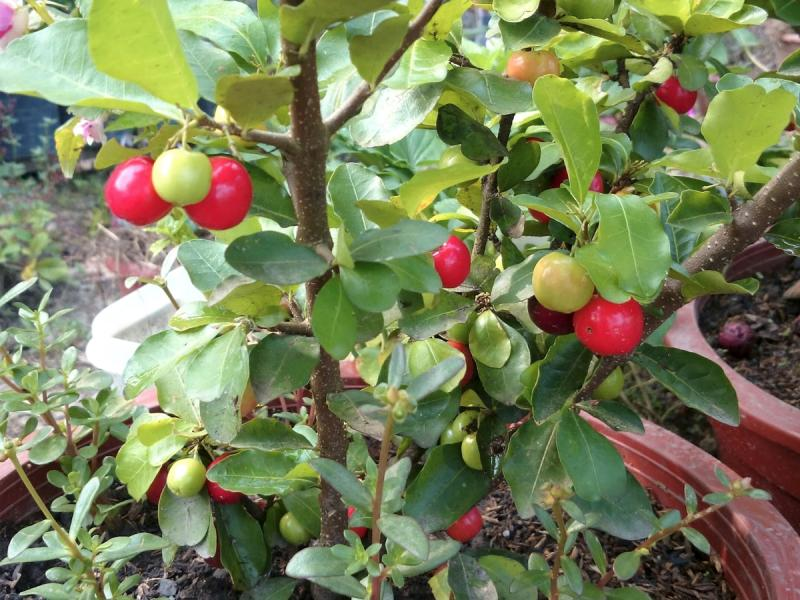
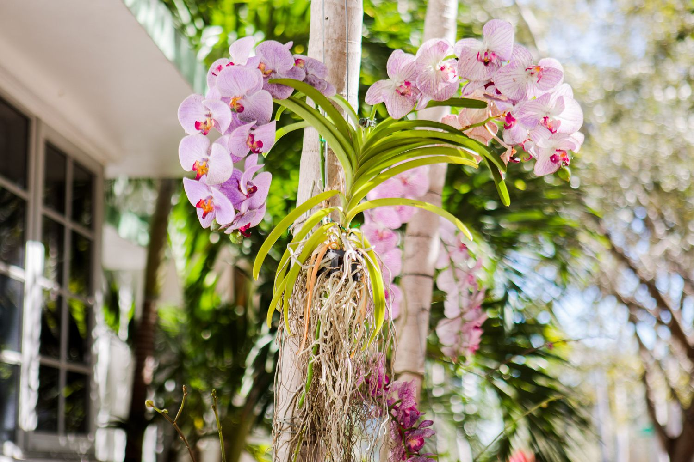
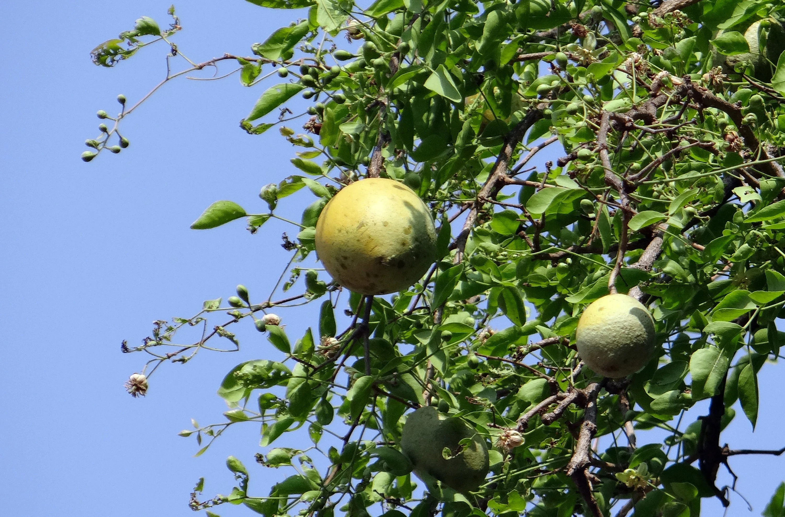

The laying out and care of a plot of ground devoted partially or wholly to the growing of plants such as flowers, herbs, or vegetables. It can be considered both as an art, concerned with arranging plants harmoniously in their surroundings, and as a science, encompassing the principles and techniques of plant cultivation.
The main theme of my garden is that it should be chemical free. And I divided my garden into three parts:
As the care that we have to take for each of these categories will be different thats why I seggregated my garden like this so that I can take care of each category at a single point of time.
Rose Plant
Barbados Cherry Plant
Orchid Plant
Indian Bael Plant
In this world everthing is temporary including our lives. It is the plants that will be there till end by helping others in the way of fruits or vegetables or the oxygen that is generatec from them. Apart from personal benifits it our responsibility to save our environment by planting trees. Everyone should be taught with the importance of gardening and plantations.